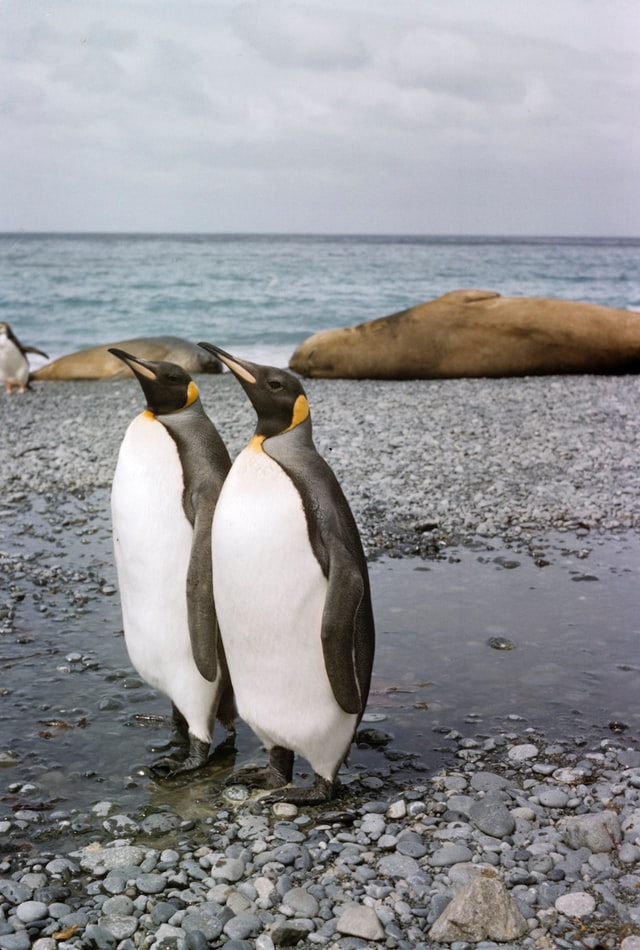

황제펭귄(Aptenodytes forsteri)은 지구상에 생존하는 모든 펭귄들 중에서 가장 키가 크고 체중이 많이 나가는 종이다. 서식지는 남극과 포클랜드 제도이다. 암컷과 수컷은 덩치와 깃털 무늬가 비슷하며, 성체는 최고 120센티미터에 몸무게는 23~45킬로그램까지 나간다. 등은 검고 가슴 부위는 창백한 노란색을 띠고 있으며 귀 부위는 밝은 노란색이다. 다른 펭귄들과 마찬가지로 황제펭귄은 날지 못한다. 이들은 해양 생활에 적합한 유선형의 몸매와 플리퍼(flipper)로 불리는 납작한 날개를 갖고 있다.
